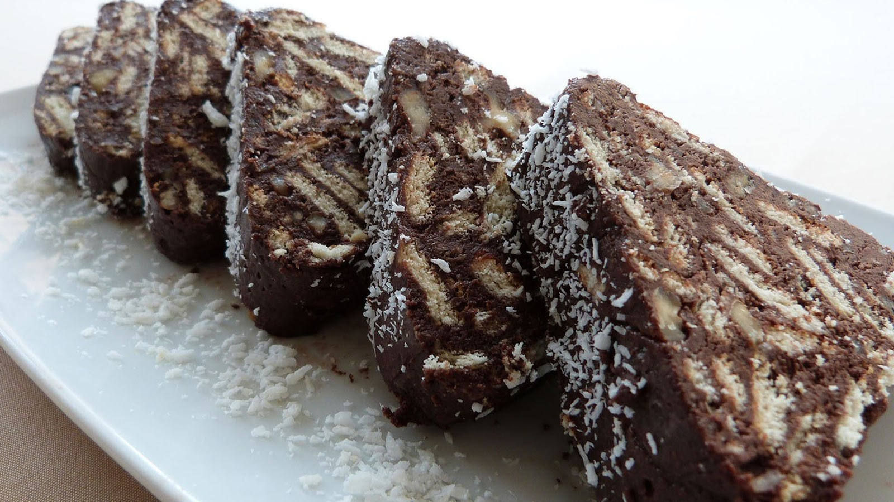

MOZAİK PASTA
Malzemeleri
- 3 su bardağı ince irmik
- 2,5 su bardağı şeker
- 350 g tereyağı veya dilerseniz margarin
- 2,5 su bardağı süt
- 2,5 su bardağı su
Yapılışı
- İrmik helvası yapmak için ilk olarak küçük bir tencereye şeker ve suyu alarak kaynamaya bırakalım.
- Ayrı bir tencereye sütü alarak ayrıca kaynatalım.
- Bir tencerede yağı eritelim. Yağımız kızdıktan sonra fıstık kullanacaksanız onları atarak kavurun yoksa irmiği ekleyerek orta ateşte kavurmaya devam edelim (rengi dönünceye kadar.)
- Kavurduğumuz irmiğe şerbeti ardından da sıcak sütü yavaş bir şekilde ilave edelim. Bu aşamada eklediğiniz şerbet sıçrayabilir dikkatli olmanızı öneririm.Tencerenin kapağı yakınınızda olsun ilk sıçramalar geçene kadar kısa bir süre kapağı kapatın. Daha sonra kısık ateşte suyunu iyice çekene kadar karıştıralım.İstediğimiz kıvama gelince karıştırmayı bırakarak ateşten alıp, kapağını kapatıp demlenmeye bırakalım.
- İrmik helvası servise hazır, Afiyet olsun.